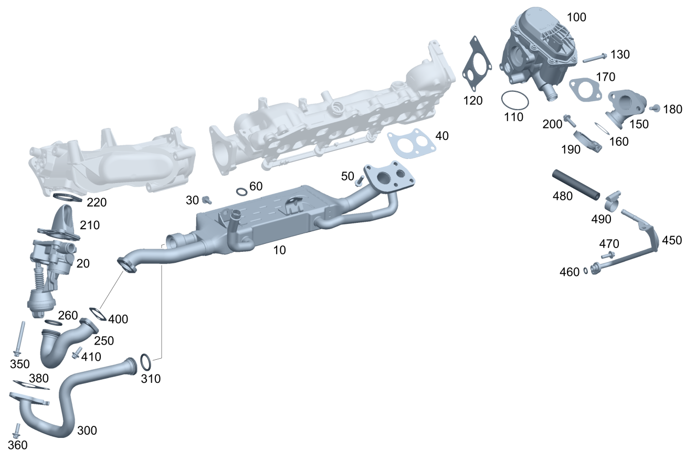

| № | Артикул | Название | Кол. | Примечание |
|---|---|---|---|---|
| 10 | A 642 140 12 75 | Теплообменник ОГ | 1 | |
| 10 | A 642 140 18 75 | Теплообменник ОГ (ABGASWAERMETAUSCHER) | 1 | |
| 10 | A 642 140 08 08 | Труба выхлопная (ABGASLEITUNG) | 1 | |
| 20 | A 642 140 12 63 | Переключающая заслонка (UMSCHALTKLAPPE) | 1 | |
| 20 | A 642 140 14 63 | Переключающая заслонка (UMSCHALTKLAPPE) | 1 | |
| 30 | N 000000 001114 | Винт с 6-гр. глвк (SECHSRUNDSCHRAUBE) | 2 | К теплообменнику ОГ; M6X15 |
| 40 | A 642 142 05 80 | Уплотнительная прокладка (DICHTBEILAGE) | 1 | Теплообменник к распределительному трубопроводу наддувочного воздуха |
| 50 | N 000000 001117 | Винт с 6-гр. глвк (SECHSRUNDSCHRAUBE) | 4 | Теплообменник к распределительному трубопроводу наддувочного воздуха; M6X23 |
| 50 | N 000000 001117 | Винт с 6-гр. глвк (SECHSRUNDSCHRAUBE) | 3 | Теплообменник к распределительному трубопроводу наддувочного воздуха; M6X23 |
| 50 | N 000000 001119 | Винт с 6-гр. глвк (SECHSRUNDSCHRAUBE) | 1 | К теплообменнику ОГ; M6X33 |
| 60 | A 020 997 47 45 | Кольцевая прокладка (O-RING) | 1 | Теплообменник к распределительному трубопроводу наддувочного воздуха; 15X3.1 |
| 100 | A 642 140 10 60 | Клапан (VENTIL) | 1 | Клапан рециркуляции ОГ |
| 100 | A 642 140 21 60 | Клапан рециркуляции ОГ (ABGASRUECKFUEHRVENTIL) | 1 | Клапан рециркуляции ОГ |
| 100 | A 642 140 22 60 | Клапан рециркуляции ОГ (ABGASRUECKFUEHRVENTIL) | 1 | Клапан рециркуляции ОГ |
| 100 | A 642 140 21 60 | Клапан рециркуляции ОГ (ABGASRUECKFUEHRVENTIL) | 1 | Клапан рециркуляции ОГ |
| 110 | A 025 997 34 48 | Уплотнительное кольцо (DICHTRING) | 1 | Клапан рециркуляции ОГ к распределительному трубопроводу наддувочного воздуха |
| 120 | A 642 141 06 80 | Уплотнительная прокладка (FLANSCHDICHTUNG) | 1 | Клапан рециркуляции ОГ к распределительному трубопроводу наддувочного воздуха |
| 120 | A 642 142 33 80 | Прокладка, однослойная (METALLDICHTUNG, EINLAGIG) | 1 | Клапан рециркуляции ОГ к распределительному трубопроводу наддувочного воздуха |
| 130 | N 000000 001117 | Винт с 6-гр. глвк (SECHSRUNDSCHRAUBE) | 2 | Клапан рециркуляции ОГ к распределительному трубопроводу наддувочного воздуха; M6X23 |
| 130 | N 000000 007674 | Винт с 6-гр. глвк (SECHSRUNDSCHRAUBE) | 2 | Клапан рециркуляции ОГ к распределительному трубопроводу наддувочного воздуха; M6X28 |
| 130 | N 000000 007675 | Винт с 6-гр. глвк (SECHSRUNDSCHRAUBE) | 2 | Клапан рециркуляции ОГ к распределительному трубопроводу наддувочного воздуха; M6X43 |
| 150 | A 642 140 25 08 | Трубопровод рецирк. ОГ (ABGASRUECKFUEHRROHR) | 1 | Трубопровод рециркуляции ОГ |
| 150 | A 642 140 33 08 | Трубопровод рецирк. ОГ (ABGASRUECKFUEHRROHR) | 1 | Трубопровод рециркуляции ОГ |
| 160 | A 272 142 04 80 | Прокладка, однослойная (METALLDICHTUNG, EINLAGIG) | 1 | |
| 170 | A 642 142 18 80 | уплотнение (DICHTUNG) | 1 | Трубопровод рециркуляции ОГ к клапану рециркуляции ОГ |
| 180 | N 000000 001119 | Винт с 6-гр. глвк (SECHSRUNDSCHRAUBE) | 2 | Трубопровод рециркуляции ОГ к клапану рециркуляции ОГ; M6X33 |
| 180 | N 000000 001117 | Винт с 6-гр. глвк (SECHSRUNDSCHRAUBE) | 2 | Трубопровод рециркуляции ОГ к клапану рециркуляции ОГ; M6X23 |
| 190 | A 001 995 38 02 | Трубн. хомут сист.вып. ОГ (ROHRSCHELLE ABGASANLAGE) | 1 | К обратному трубопроводу ОГ |
| 200 | N 000000 006247 | Винт с 6-гр. глвк (SECHSRUNDSCHRAUBE) | 1 | M6X25 |
| 210 | A 642 140 23 08 | Трубопровод рецирк. ОГ | 1 | К теплообменнику ОГ |
| 210 | A 642 140 27 08 | Трубопровод рецирк. ОГ (ABGASRUECKFUEHRROHR) | 1 | К теплообменнику ОГ |
| 220 | A 642 141 00 80 | Уплотнение (DICHTUNG) | 1 | Заслонка переключения |
| 250 | A 642 140 10 08 | Трубопровод рецирк. ОГ | 1 | Между теплообменником охладителя ОГ и переключающей заслонкой |
| 250 | A 642 140 34 08 | Трубопровод рецирк. ОГ (ABGASRUECKFUEHRROHR) | 1 | Между теплообменником охладителя ОГ и переключающей заслонкой |
| 260 | A 018 997 89 45 | - Кольцевая прокладка (O-RING) | 1 | |
| 300 | A 642 140 02 08 | Труба выхлопная (ABGASLEITUNG) | 1 | |
| 300 | A 642 140 16 08 | Трубопровод рецирк. ОГ | 1 | |
| 300 | A 642 140 29 08 | Трубопровод рецирк. ОГ (ABGASRUECKFUEHRROHR) | 1 | |
| 310 | A 018 997 90 45 | - Кольцевая прокладка (O-RING) | 1 | |
| 350 | N 910143 006001 | Винт с 6-гр. глвк (SECHSRUNDSCHRAUBE) | 3 | Заслонка переключения к поперечному патрубку наддувочного воздуха; M6X16 |
| 360 | N 000000 001116 | Винт с 6-гр. глвк (SECHSRUNDSCHRAUBE) | 1 | Трубопровод рециркуляции ОГ к переключающей заслонке; M6X19 |
| 380 | A 642 142 03 81 | УПЛОТНИТЕЛЬ | 1 | Трубопровод рециркуляции ОГ к переключающей заслонке |
| 380 | A 642 142 11 81 | Уплотнение фланца (DICHTUNG) | 1 | Трубопровод рециркуляции ОГ к переключающей заслонке |
| 400 | A 642 142 10 81 | Уплотнение фланца (DICHTUNG) | 1 | Выпускная труба к теплообменнику |
| 410 | N 910143 006001 | Винт с 6-гр. глвк (SECHSRUNDSCHRAUBE) | 2 | Выпускная труба к теплообменнику; M6X16 |
| 450 | A 642 200 01 52 | Провод (LEITUNG) | 1 | |
| 460 | A 014 997 62 45 | Уплотнительное кольцо (DICHTRING) | 1 | |
| 470 | N 000000 001116 | Винт с 6-гр. глвк (SECHSRUNDSCHRAUBE) | 1 | Трубопровод к головке блока цилиндров; M6X19 |
| 480 | A 642 203 02 82 | Шланг (SCHLAUCH) | 1 | Между трубопроводом охлаждения и клапаном рециркуляции ОГ |
| 490 | A 000 995 35 07 | Хомут (SCHELLE) | 2 | 12\-22 MM |
Позиций: 50 · подписано на схемах: 50 · колесо — плавный зум в курсор, перетаскивание — пан, двойной клик — зум, клик по артикулу — скопировать.